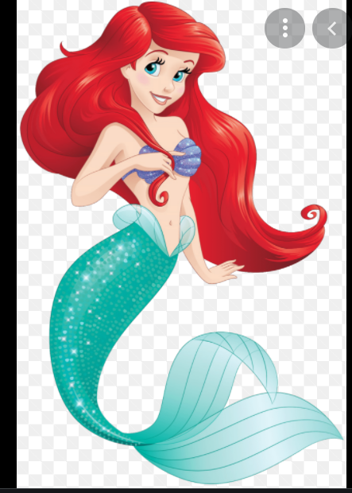

My Favorite character
Ariel

Ariel is the protagonist of Disney's 1989 animated feature film, The Little Mermaid. She is the seventh and youngest daughter of King Triton and Queen Athena, rulers of the undersea kingdom of Atlantica. Ariel lived through much of her young life with a passionate - yet forbidden - admiration of the human world, and longed to someday experience life on the surface.Ariel is an independent, headstrong and determined young mermaid. She is the youngest and prettiest princess of the sea but spends most of her time outside the palace walls of Atlantica singing, daydreaming, and adventuring with her best friend Flounder the guppy fish, and sometimes Sebastian the crab who is also the royal adviser to Ariel's father. At the age of 16, she unexpectedly becomes deeply infatuated with a young and handsome human prince named Eric and sacrifices all things dear to her for the chance of being with her one true love. Ariel is a bright, spirited and headstrong mermaid princess with a strong passion for adventure and exploration. Her tendency to explore the more mysterious depths of the ocean (or more importantly, the world beyond the ocean) can lead to an array of problems to both herself and her friends, and in the confines of her personal life - as seen when she gets into an argument with her overprotective father, King Triton. Despite this, Ariel's selflessness, compassion and intuitive way of thinking often resolve such problems, as she always takes full responsibility for her actions.
The reason why ariel is my inspiration is because ariel is kind and caring to others no matter what their circumstances.She has a curious, spunky, and strong-willed personality. Once Ariel decides she wants something, she's determined to get it, no matter what her father may say.Ariel is a bright, spirited and headstrong mermaid princess with a strong passion for adventure and exploration. Her tendency to explore the more mysterious depths of the ocean or more importantly, the world beyond the ocean.
Click the image to see information on Ron Clement.Ron Clements is the director of My Little Mermaid.
Clicke the image to see information on Arie.
